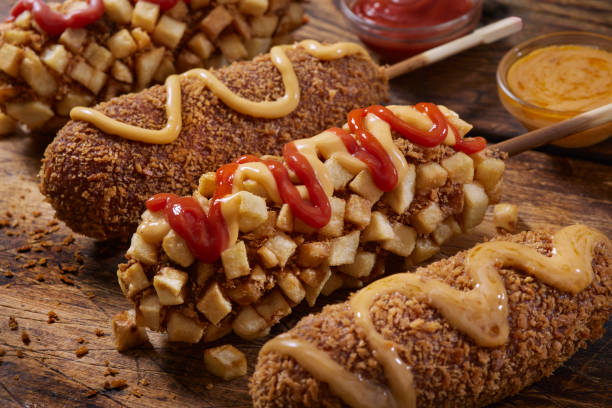

Homemade Corn Dogs

Description
A corn dog is a sausage (usually a hot dog) that has been skewered,
coated in a cornmeal batter, and deep-fried. A staple of American cuisine,
the street food was likely invented by German immigrants in Texas in the 1920s.
Ingredients
- Cornmeal and flour: This corn dog batter starts with yellow cornmeal and all-purpose flour.
- Sugar:A pinch of sugar lends a hint of sweetness.
- Baking powder:Baking powder acts as a leavener, which means it helps the batter rise
- Salt and pepper:Salt enhances the flavors of the other ingredients.
- Milk:A cup of milk adds moisture, ensuring a tender coating.
- Eggs:An egg gives the batter even more moisture and acts as a binder, which means it helps hold the batter together.
- OilFry the corn dogs in a neutral oil with a high smoke point, such as vegetable oil.
- beef frankfurtersThis recipe calls for beef frankfurters, but you can use pork franks (or hot dogs) if you'd prefer.
Steps
- Combine cornmeal, flour, sugar, baking powder, salt, and pepper in a medium bowl;
stir in milk and egg to make a batter.
- Heat oil in a deep fryer or large saucepan to 375 degrees F (190 degrees C).
Meanwhile, pat frankfurters dry and insert a skewer into each one.
Roll frankfurters in batter until well coated.
- Fry 2 or 3 corn dogs at a time in preheated oil until lightly browned,
about 3 minutes. Drain on paper towels.
Return Home